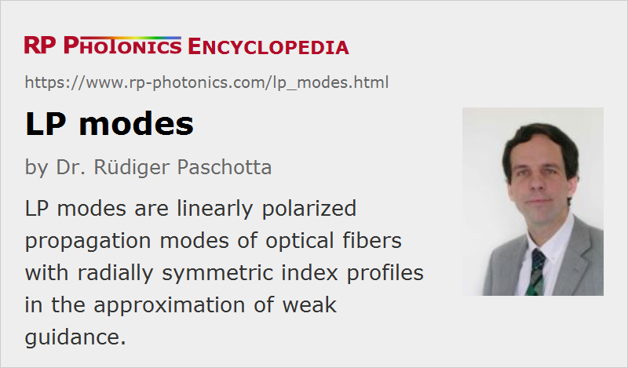

LP Modes
Definition: linearly polarized modes of optical fibers with radially symmetric index profiles in the approximation of weak guidance
More general terms: modes of optical fibers
German: LP-Moden
Category: fiber optics and waveguides
How to cite the article; suggest additional literature
Author: Dr. Rüdiger Paschotta
The transverse refractive index profiles of many optical fibers are radially symmetric, i.e., the refractive index depends only on the radial coordinate r and not on the azimuthal coordinate φ. Also, the index profiles of nearly all fibers (except for photonic crystal fibers) exhibit only a small index contrast, so that the fiber can be assumed to be only weakly guiding. In this situation, the calculation of the fiber modes is greatly simplified. One obtains the linearly polarized LP modes.
In cases with stronger guidance, one would need to distinguish TE and TM modes, where only either the electric or the magnetic field is exactly perpendicular to the fiber axis. There are also hybrid modes of HE and EH type, having a non-zero longitudinal components of both electric and magnetic field. That case of not weakly guiding fibers applies, for example, to nanofibers where a glass/air interface provides the waveguide function.
Calculation of LP Modes
The wave equation for the complex electric field profile E(r,φ) in cylindrical coordinates is
where β is the imaginary part of the propagation constant (still to be determined).
Due to the radial symmetry, we can use the ansatz
where l needs to be an integer (because otherwise the φ-dependent factor would not be continuous). We can use the same ansatz with a factor sin l φ instead of cos l φ, or in fact some linear combination of those, but the resulting radial equation is in any case
where n(r) is the refractive index and k = 2 π / λ the vacuum wavenumber.
For a given wavelength, only for certain discrete values of β, the radial equation has solutions which tend to zero for r going to infinity. Only such solutions can represent guided modes of the fiber. These β values corresponding to guided modes are called βlm, where l is the selected azimuthal index (see above) and the index m starts from 1 (for the highest possible β value) and ranges to some maximum value, which tends to decrease for increasing l. Once l gets too high, there are no solutions at all. One can then find all guided modes by starting with l = 0, finding all β values for that, and then do this for increasing l values until there are no solutions any more.
For step-index fibers (where the refractive index is constant within the fiber core), analytical solutions for the core and cladding part of the radial equation can be found. The core part involves a Bessel function Jl(u r), and the cladding part a modified Bessel function Kl(w r), where
and
The prefactors for the core and cladding part must be balanced such that the function is continuous at the core/cladding interface.
One recognizes easily that
where NA is the numerical aperture.
Properties of the LP Modes
Step-index Fibers
All guided modes have β values which lie between the plane-wave wavenumbers of the core and the cladding. Modes with β values close to the lower limit (the cladding wavenumber) have a small w parameter, leading to a slow decay of the radial function in the cladding.
One may calculate the effective refractive index of a fiber as its β value divided by the vacuum wavenumber. For guided modes, that effective index lies between the refractive indices of core and cladding.
The lowest-order mode (LP01) has an intensity profile which is similar to that of a Gaussian beam, particularly in cases with not too high V number. Particularly for the higher m values, the resulting radial functions can oscillate in the fiber core, whereas it decays more or less rapidly in the cladding. Figure 1 shows the radial functions for an example case. Here, we have two modes with l = 0 (LP01, LP02) and one mode each for l = 1 and l = 2. Note that for each non-zero l value we have two linearly independent solutions, having a cos l φ and sin l φ dependence, respectively. Taking this into account, we have a total of 2 + 2 + 2 = 6 modes in our example case.
The higher the V number of the fiber, the more guided modes exist. For V below 2.405, there is only a single guided mode (apart from different polarization directions), so that we have a single-mode fiber. For large V, the number of modes is proportional to V2. Figure 2 shows the complex amplitude profiles of all modes of a step-index fiber with a higher V number of 11.4.

In this example, the LP23 and LP04 modes are relatively close to their cut-off: they would cease to exist for only a slightly longer wavelength. In such a case, the w parameter becomes quite small, so that the field penetrates more into the cladding. Such modes can be more sensitive to bend losses, for example. However, only for modes with l = 0, the power propagating in the core vanishes at the cut-off.
Fibers with Other Refractive Index Profiles
For arbitrary radial index profiles, the guided modes can still be calculated as LP modes, even though their shapes may deviate substantially from those for a step-index fiber. One usually requires a numerical method for finding the radial solutions for guided modes, at least for the core part; a modified Bessel function can still be used for the cladding part, where the refractive index is constant. For the core part, one may always start at r = 0, propagate the field up to the core/cladding interface (using the Runge–Kutta algorithm, for example), and connect it with the modified Bessel function for the cladding part. The mismatch of the derivatives at the interface can be minimized by numerically refining the β value. One needs to implement a numerical strategy for finding all β values where that mismatch vanishes.
The numerical calculations are not entirely trivial due to various technical details. At least if a high computation speed is required, one has to carefully determine the required numerical step sizes depending on the parameters for each mode. The same applies to the parameters for numerical root finding.
Of course, the whole method cannot be applied any more for not radially symmetric index profiles; one then has to refer to two-dimensional numerical methods, which are much more complicated to handle and require substantially more computation time.
Figure 2 shows the calculated mode functions for an example case.
Propagation Velocity and Chromatic Dispersion
The phase velocity of a mode is simply the vacuum velocity of light divided by the effective refractive index (see above). The group velocity is the inverse of the derivative of the β value with respect to the angular frequency. For numerical calculations of the group velocity, one thus needs to calculate a mode for at least two different (closely spaced) wavelengths. In order to take into account the material dispersion, one needs to use wavelength-dependent refractive indices.
The group velocity dispersion is the second derivative of the β value with respect to the angular frequency. Numerically, one requires the β values for at least three different wavelengths. Note that for small wavelength spacings one requires a very high accuracy of the calculated β values.
Optimization of Refractive Index Profiles
By optimizing the refractive index profile of a fiber, one can improve a number of important parameters of the LP modes. For example, one may achieve the wanted mode sizes and number of modes, but also strongly modify the group velocity and chromatic dispersion. For minimizing mode coupling effects, one may take care that the β values of relevant modes do not get too close. Flexible software for calculating fiber modes can be an essential tool for such optimizations.
Questions and Comments from Users
Here you can submit questions and comments. As far as they get accepted by the author, they will appear above this paragraph together with the author’s answer. The author will decide on acceptance based on certain criteria. Essentially, the issue must be of sufficiently broad interest.
Please do not enter personal data here; we would otherwise delete it soon. (See also our privacy declaration.) If you wish to receive personal feedback or consultancy from the author, please contact him e.g. via e-mail.
By submitting the information, you give your consent to the potential publication of your inputs on our website according to our rules. (If you later retract your consent, we will delete those inputs.) As your inputs are first reviewed by the author, they may be published with some delay.
Bibliography
| [1] | A. W. Snyder and J. D. Love, Optical Waveguide Theory, Chapman and Hall, London (1983) |
| [2] | J. A. Buck, Fundamentals of Optical Fibers, Wiley, Hoboken, New Jersey (2004) |
| [3] | F. Mitschke, Fiber Optics: Physics and Technology, Springer, Berlin (2010) |
| [4] | R. Paschotta, Field Guide to Optical Fiber Technology, SPIE Press, Bellingham, WA (2010) |
See also: fibers, waveguides, modes, cut-off wavelength
and other articles in the category fiber optics and waveguides
|  |
If you like this page, please share the link with your friends and colleagues, e.g. via social media:
These sharing buttons are implemented in a privacy-friendly way!